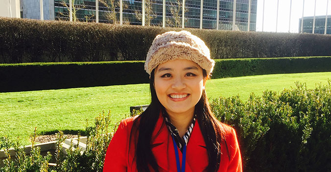

Point Bar Review 是由一群具有美國紐約州與加州律師執照的華人律師組成，師資團隊包含眾多具備優秀學經歷的律師擔任講師，包含眾多美國T14 名校畢業的律師，例如：Harvard University, Stanford University, Columbia University, New York University, University of Pennsylvania, Duke University；這些老師同時亦畢業於北京大學、清華大學、中國政法大學、復旦大學、交通大學、台灣大學等名校，於大陸法系以及英美法系都有深厚研究。
在經歷方面，Point Bar Review包含曾任職於Clifford Chance律師事務所、Herbert Smith Freehills、Cleary Gottlieb Steen & Hamilton LLP、Dorsey & Whitney LLP 、君合律師事務所、金杜律師事務所、理律法律事務所等全球各大型事務所的律師，以及駐聯合國大使館顧問、外商與上市企業公司法務主管等等。
為了講師個人隱私以及工作性質要求，恕無法一一揭露所有團隊講師姓名以及現職。 
總顧問．Nancy
． 美國Columbia Law School LLM, 畢業時獲得Harlan Fiske Scholar honor
． 通過美國紐約律師、加州律師考試，擁有紐約州、加州，以及台灣律師執業資格
． 具有超過十年以上大型培訓機構/補習班教學經驗，曾教導的學生人數上萬人
． 曾任馬紹爾群島駐紐約聯合國大使館顧問
． 曾任理律法律事務所律師